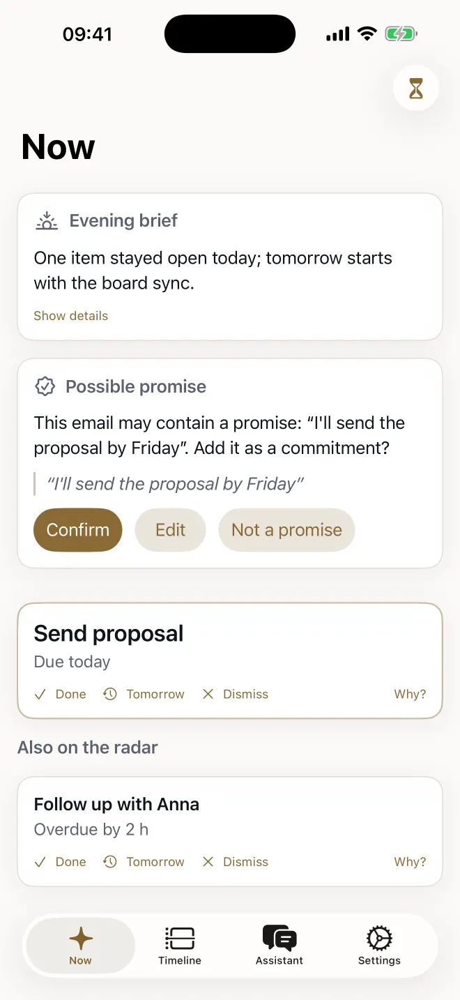
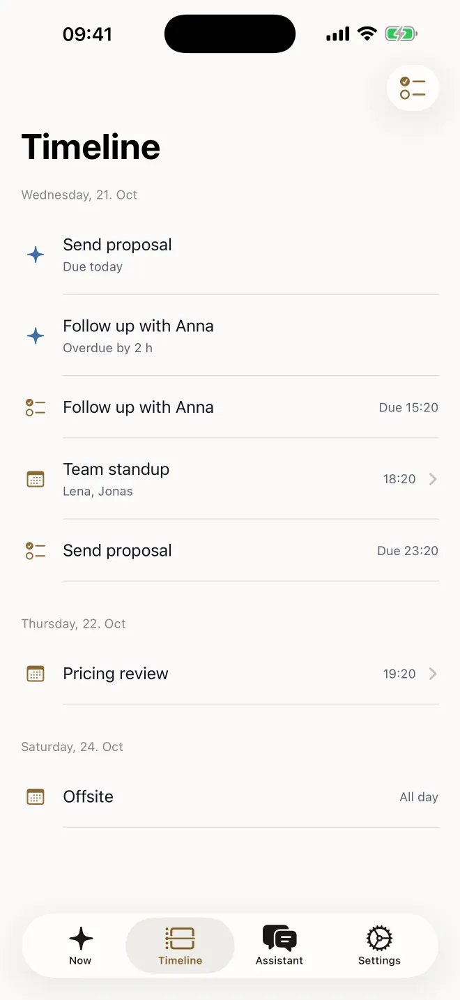
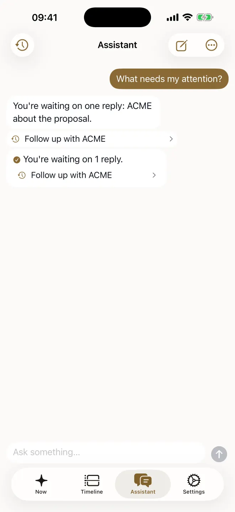
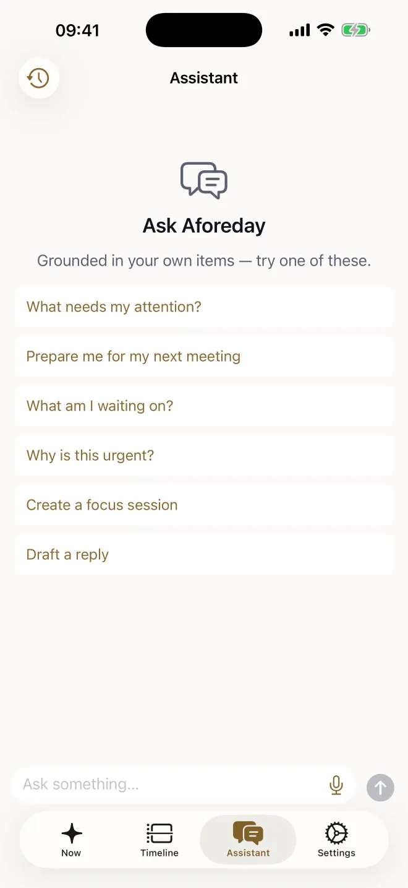
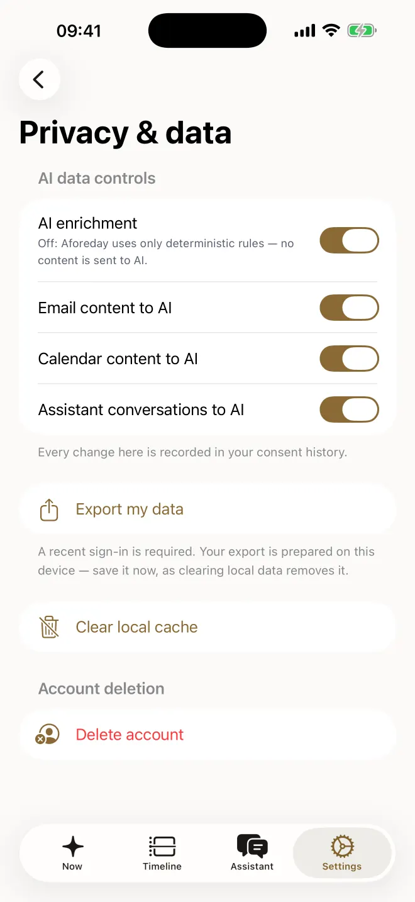

Aforeday reads the calendar and reminders already on your iPhone, tells you the few things that need you, and proposes what to do about them. Nothing happens until you approve it, and what it does can be undone.
Available worldwide on the App Store. A subscription is required; the price is shown in the app and on the App Store before you subscribe.



Pricing reviewThursday 19:20 · brief ready
Who is in the room
Follow up with AnnaOverdue by 2 h · proposed: a reminder for tomorrow, 09:00
ApproveEditSkip
Reminder addedCall Jonas · tomorrow 09:00
Undo
What it does
Three jobs a good chief of staff does, and nothing else.
Not a summary of your day, and not another inbox. A short list of what needs you, the context before each meeting, and a calendar that pushes back.
Your day, before it starts.
Each morning Aforeday gives you a short list of what needs you today and what happens if you skip it. Before each meeting it prepares a brief from your own calendar: who is in the room, when you last met them, and what you have outstanding. When nothing needs you, it says so and stays quiet.
A calendar that pushes back.
Aforeday tells the meetings you chose apart from the meetings booked onto you, and drafts the decline or the request to move it. You read the draft, and you send it.
Propose. Approve. Act, with undo.
Aforeday can work on what it shows you: it proposes an action, such as a reminder on your phone or a reply to review. Every proposal waits for you. If you choose “Act and tell me” for a kind of action, it tells you first and holds anything that leaves your phone for five minutes, with Undo in the notification. Turning that on needs Face ID or your passcode.
How approval works
It proposes. You approve. Then it acts.
Ask-first is the default for every kind of action. You can widen that, one kind of action at a time, and narrow it again whenever you like.
Try the switch. “Ask me first” is how Aforeday starts. Choosing “Act and tell me” for a kind of action that can leave your phone asks for Face ID or your passcode first, and Pause stops the agent reading, drafting and proposing at any time.
The default. Every kind of action asks you first; the setting is yours, and the AI never sees or changes it.Set per kind of action, with Face ID or your passcode. A first message to someone you have never written to always asks you in the app, whatever the setting.
Inside the app
Timeline
Your day, in one line.
The timeline puts what you have to do and where you need to be side by side, so the day reads in the order it will happen.
Assistant
Ask what needs you.
The assistant answers from your own calendar and reminders, and its answers link back to the items they came from, so you can check them rather than trust them.

Privacy & data
Quiet by default, and under your control.
Choose how much a notification reveals on your Lock Screen, switch AI off entirely or one source at a time, and export or delete your data from Settings. Pause stops the agent reading, drafting and proposing at any time.

Your data
What Aforeday reads, and what it keeps.
Aforeday works from what is already on your iPhone. It asks for calendar and reminder access, explains each request before iOS shows it, and you choose which calendars and lists count. There is no account to connect today: mail and chat accounts are not yet available.
Your iPhone’s calendars
What it is for
The timeline, the morning shortlist, meeting briefs, and telling meetings booked onto you from meetings you chose.
What Aforeday keeps
For the calendars you include: each event’s title, start and end, time zone, whether it is all-day, and the display names of attendees.
Stays on your phone
Notes, links and addresses.
Your iPhone’s reminders
What it is for
Showing open to-dos alongside your day, and adding one when you approve a proposal.
What Aforeday keeps
For the lists you include: each reminder’s title and due date. Reminders that are open, or were completed in the last seven days.
Stays on your phone
Everything else.
What you tell it
What it is for
Answering your questions, and writing the drafts and notes you ask for.
What Aforeday keeps
Your conversations with the assistant for 30 days, and drafts for 30 days or until you delete them.
Stays on your phone
Your voice. Dictation is transcribed on your iPhone; the audio never leaves it.
What Aforeday never does. It never sends anything without your approval. It never asks for your location, contacts, photos or health data. Your voice is transcribed on your phone and the audio never leaves it; Face ID is checked by iOS and never leaves it either. It never uses your data for advertising, never sells it, and does not use it to train AI models. The details, including how long each kind of data is kept, are in the privacy policy.
Privacy you can check
Built to be trusted with your working life.
Only what the feature needs
Every permission maps to a feature you can see, and the app explains each one before iOS asks.
Read from your phone, kept within bounds
Addresses, notes and links stay on your iPhone. What reaches us is the title, the time and who is in the room.
AI in the EU, never trained on you
AI runs on Google Cloud in Belgium (europe-west1), is not used to train models, and can be switched off.
Export or delete, from the app
Download a copy of your data, or delete your account, from Settings. The policy lists exactly what each covers.
Your Lock Screen, your rules
Notifications show full details, a discreet summary, or only that Aforeday has something.
You approve, Aforeday acts
Ask-first is the default for every kind of action. Standing approval needs Face ID, and every send has an undo window.
Subscription
One subscription. No free tier, no advertising.
Aforeday is paid for by the people who use it, and by no one else. Apple handles payment, renewals, cancellation and refunds; we never see your card.
Aforeday Pro
The price and billing period are shown in the app and on the App Store before you subscribe.
Sign in with Apple is the only sign-in. No password to make, no account to set up elsewhere.
Renews automatically unless you cancel at least 24 hours before the end of the current period; cancel in your iPhone’s Settings and keep access until the period ends.
Restore Purchases brings a subscription you already own to a new iPhone.
Available worldwide on the App Store.
Tomorrow, before it starts
Start tomorrow with a plan.
Aforeday is on the App Store. Sign in with Apple, allow calendar access, and your first briefing is ready within one refresh.